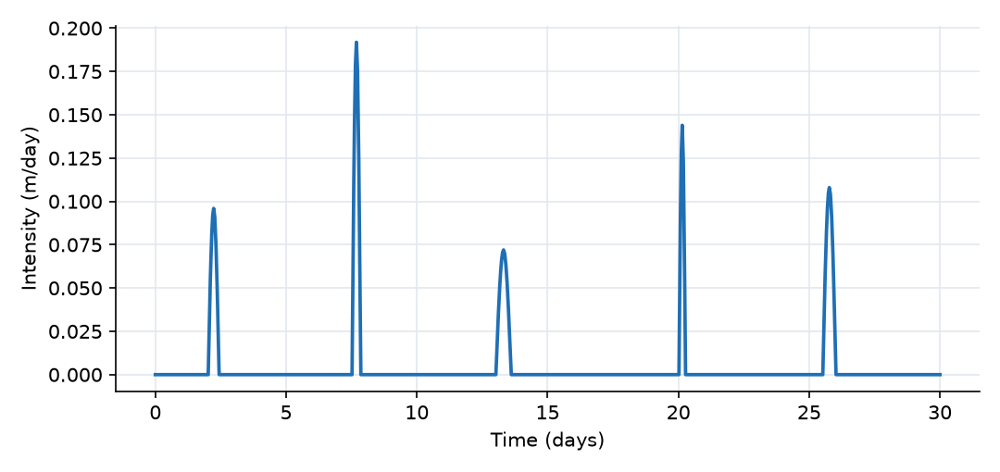
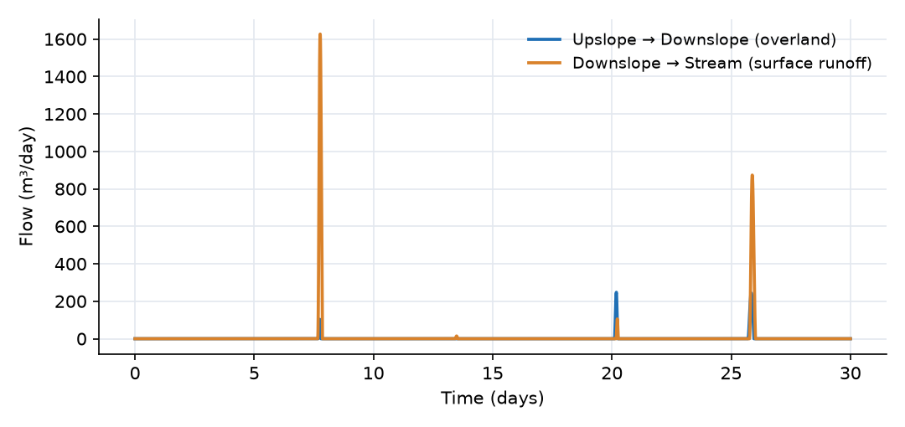
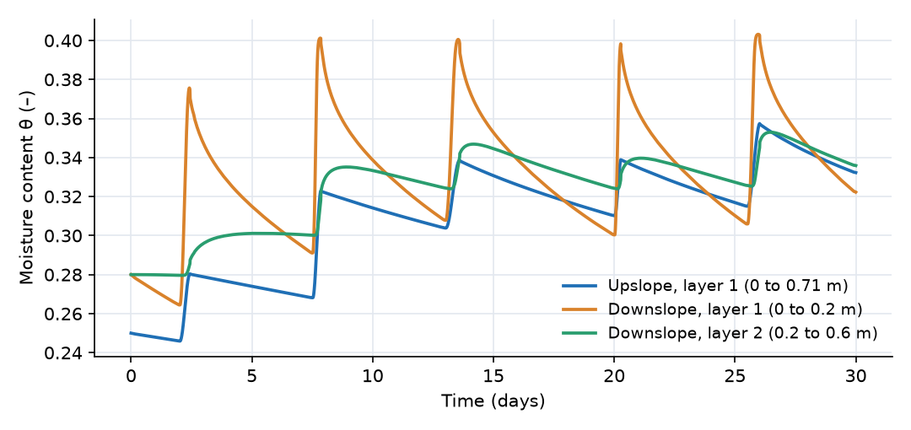
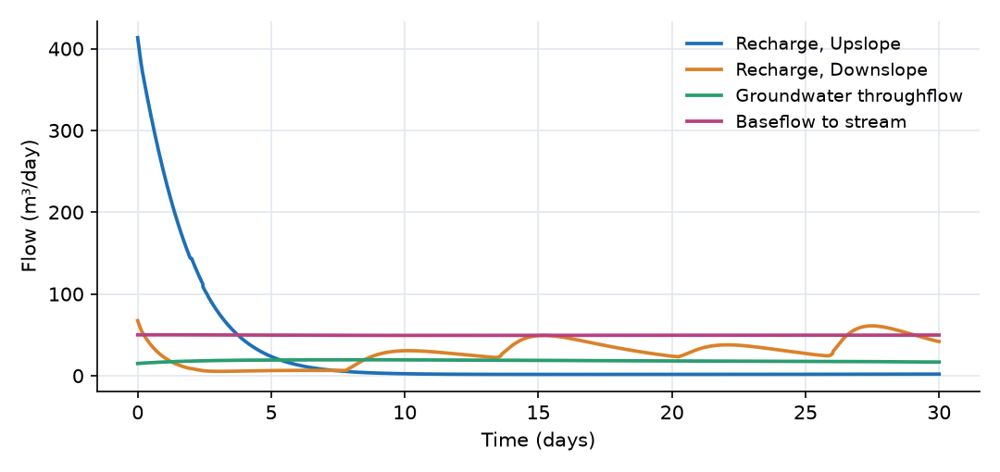

What this model represents
A hydrologic response unit (HRU) is a piece of land treated as one hydrological column: a surface, a soil profile and a groundwater store, with the fluxes between them. Semi-distributed watershed models (SWAT, PRMS, and many others) build a watershed from HRUs. OpenHydroQual provides the HRU as a composite block, so a whole land column is added as a single object with one set of properties.
This model is a hillslope with two units in series: a steeper upslope unit with a deep unsaturated zone, and a flatter toe-slope unit with a thin soil next to the stream. Surface water and groundwater both move downslope from one unit to the next. The model shows how such a cascade generates streamflow, and why runoff tends to come from the wet land near the stream (the variable-source-area idea).
How it works
Each Hydrologic_Response_Unit contains five members and four internal links. In the output their names carry the unit name as a prefix, for example Downslope__Soil_1_theta or Upslope__recharge_flow.
| Member | What it is | Upslope | Downslope |
|---|---|---|---|
Catchment |
Surface store that receives rain | at 100 m | at 94 m |
Soil_1 |
Top soil layer, D/7 thick | 0.71 m | 0.20 m |
Soil_2 |
Middle layer, 2D/7 | 1.43 m | 0.40 m |
Soil_3 |
Bottom layer, 4D/7 | 2.86 m | 0.80 m |
Groundwater |
Groundwater cell below the soil | 8 m, base at 87 m | 6.6 m, base at 86 m |
D is the depth to groundwater (5 m and 1.4 m). Both units have a plan area A = 20,000 m² and the same clay-loam soil: K_sat = 0.06 m/day, van Genuchten α = 1.9 1/m, n = 1.31, θ_sat = 0.41, θ_res = 0.095.
Surface. Rain falls on the Catchment member. Water on the surface leaves by infiltration, or as sheet flow when its depth d exceeds the depression storage d_s (1 mm):
Q = 86400 · (W/n) · S^0.5 · max(d − d_s, 0)^(5/3) (m³/day)
with width W = 200 m, slope S and Manning roughness n (0.05 and 0.1 upslope, 0.02 and 0.12 downslope). Overland_flow delivers the upslope sheet flow to the downslope surface, where it can infiltrate (run-on). Runoff_to_stream delivers the downslope sheet flow to the stream.
Soil water. Each layer has the van Genuchten relations between moisture content θ, effective saturation S_e = (θ − θ_res)/(θ_sat − θ_res) and suction head ψ:
ψ = −(1/α)·(S_e^(−1/m) − 1)^(1/n), k_r = [1 − (1 − S_e^(1/m))^m]², m = 1 − 1/n
and its total head is h = bottom elevation + layer thickness + ψ. Flow between members is Darcy flow driven by head differences:
- Infiltration (surface to
Soil_1): Q = A·K_sat·(h_surface − h_1)/(d_1/2), switched off smoothly when no water is ponded. While the top layer is dry, its suction makes the infiltration capacity several times K_sat. - Percolation (
Soil_1toSoil_2,Soil_2toSoil_3): Q = A·K_sat·k_r·(h_i − h_j)/L, with k_r evaluated at the wetter of the two layers and L the mean thickness. It can be upward (capillary rise). - Recharge (
Soil_3toGroundwater): Q = A·K_r·(h_3 − h_g)/L with the constant recharge conductivity K_r = 0.06 m/day and L = (d_3 + b)/2, b being the groundwater cell thickness. - Evapotranspiration from
Soil_1: E = corr_fact · ET₀ · A · θ/θ_sat.
Groundwater. The groundwater cell stores water as a moisture content θ_g over its volume A·b. Its head is h_g = base + b + (θ_g − φ)/S_s with porosity φ = 0.25. The specific storage is set to S_s = φ/b (0.031 and 0.038 1/m), which makes h_g = base + θ_g·b/φ, the elevation of a free water table. The initial moisture contents (0.125 and 0.171) put the water tables at 91 m and 90.5 m.
Between the units and to the stream. Groundwater_throughflow is Q = A_x·K̄·(h_up − h_down)/L with A_x = 1200 m², K̄ = 5 m/day and L = 200 m, about 15 m³/day at the start. Baseflow_to_stream is Q = A_b·K·(h_down − h_stream)/L with A_b = 400 m², K = 5 m/day, L = 100 m and the stream at 88 m, about 50 m³/day.
What to look for in the results
- Where runoff comes from. Of 149 mm of rain, only 7.3 mm leaves as surface runoff, in three storms. The upslope unit sheds 59 m³ of overland flow in total, and in the storm on day 20 most of it re-infiltrates on the toe slope (18 m³ arrives, 5 m³ reaches the stream).
- Infiltration excess. In the storm on day 7.5 (8 mm/h) the rain rate exceeds the infiltration capacity on both units. Runoff to the stream peaks at 1630 m³/day.
- Saturation excess. By day 25.5 the thin top layer of the toe slope is almost saturated (θ = 0.403 of 0.41). In the last storm the toe slope produces 115 m³ of runoff although the rain is less intense, while the upper unit contributes only 34 m³.
- Slow subsurface. Recharge responds to storms days later and is damped by the soil column. Over one month the water tables move by less than 0.13 m, so throughflow (15 to 20 m³/day) and baseflow (about 50 m³/day) are nearly constant. In the first day the bottom soil layers drain toward equilibrium with the water table, which shows as a short peak of recharge.
- Water balance. Over the 4 ha hillslope, in mm of water:
| Term | m³ | mm |
|---|---|---|
| Rain | 5947 | 148.7 |
| Evapotranspiration | −2466 | −61.7 |
| Surface runoff to the stream | −292 | −7.3 |
| Baseflow to the stream | −1486 | −37.2 |
| Increase in soil water | 1516 | 37.9 |
| Increase in groundwater | 184 | 4.6 |
The terms close to within 1.2 m³ (0.02% of the rain).
Assumptions and limitations
- Each unit is laterally uniform: one surface depth, one moisture content per layer and one water table for 2 ha. Gradients inside a unit are not resolved.
- The three soil layers share one set of soil properties. Evapotranspiration is taken only from the top layer and is proportional to its relative wetness.
- Recharge uses a constant conductivity. This is adequate here because the water tables lie only 2 to 4 m below the soil columns; for deep water tables the Urban HRU recharges through the unsaturated conductivity instead (see the technical guide).
- The stream is a fixed head at 88 m, so stream stage does not respond to the inflow.
- Surface runoff is sheet flow with no channel; the depression storage holds water that only infiltrates (there is no surface evaporation).
- The groundwater cell is the confined-type
Groundwater cell. Setting S_s = φ/b gives it a water-table response, but its storage is not limited at the top of the cell.
Model diagram
Hover a block or link to see its name and type. Arrows show the positive flow direction.
Components
Click a component to see every property set in the model file, with units and meaning.
Blocks 1
Storage compartments: each holds water (and dissolved or particulate mass) and has a state that evolves in time.
Streamfixed_headFixed-head block at 88 m standing for the stream at the foot of the slope. Its storage starts at zero and accumulates both surface runoff and baseflow.
fixed_head: Fixed-head boundary
| Property | Value | Unit | Meaning |
|---|---|---|---|
| Head | 88 | m | |
| Initial Storage | 0 | m3 |
Composite blocks 2
Pre-assembled groups of blocks and links that behave as a single unit.
UpslopeHydrologic_Response_Unit · hydrologic_response_unitUpper hillslope unit: 2 ha, surface at 100 m, 5 m of unsaturated clay-loam soil over an 8 m groundwater cell. The water table starts at 91 m, 4 m below the soil column. Steeper (5%) and with a deep unsaturated zone.
Hydrologic_Response_Unit: A one-dimensional land column: runoff-generating catchment surface, an unsaturated profile discretised into three layers whose thicknesses are in a 1:2:4 ratio (finest at the surface, where moisture gradients are steepest), and a groundwater cell beneath. Runoff leaves through the catchment; groundwater leaves through a selected external connector. Use groundwater_to_stream for head-gradient-driven discharge or Linear_baseflow for a threshold linear-reservoir recession, not both for the same physical pathway. Layer thicknesses and all bottom elevations are computed from the ground surface elevation, the depth to groundwater and the groundwater thickness.
| Property | Value | Unit | Meaning |
|---|---|---|---|
| Plan area of the unit | 20000 | m2 | Applied to the catchment, all three soil layers and the groundwater cell - every block in the unit shares one plan area. |
| Ground surface elevation | 100 | m | Datum for the whole column. Every bottom elevation below is measured down from here. |
| Depth from the ground surface to the water table | 5.0 | m | Total thickness of the unsaturated profile. It is split between the three layers in a 1:2:4 ratio, so they are one seventh, two sevenths and four sevenths of this value. |
| Thickness of the groundwater cell | 8.0 | m | Saturated thickness below the water table. Its bottom elevation is the surface elevation less the depth to groundwater less this thickness. |
| Precipitation source | Rain | Applied to the catchment surface. | |
| Evapotranspiration source (top soil layer only) | ET | Applied to the uppermost soil layer only; the deeper layers and the groundwater cell are not subject to evapotranspiration. | |
| Slope of the catchment surface | 0.05 | ||
| Overland flow width of the catchment | 200 | m | |
| Manning roughness coefficient of the surface | 0.1 | ||
| Surface depression storage depth | 0.001 | m | |
| Fraction of precipitation that becomes runoff | 1 | ||
| Saturated hydraulic conductivity of the soil profile | 0.06 | m/day | Shared by all three layers: they discretise one soil profile rather than representing different materials. |
| van Genuchten α of the soil profile | 1.9 | 1/m | |
| van Genuchten n of the soil profile | 1.31 | ||
| Saturated moisture content of the soil profile | 0.41 | ||
| Residual moisture content of the soil profile | 0.095 | ||
| Specific storage of the soil profile | 0.01 | 1/m | |
| Initial moisture content of the soil layers | 0.25 | Initial condition for all three layers. Each layer's initial storage follows from its own area, thickness and this value. | |
| Hydraulic conductivity of the soil-aquifer interface | 0.06 | m/day | Governs recharge from the bottom soil layer into the groundwater cell. Set it equal to K_sat for a homogeneous profile, or lower it to represent a clogging layer or aquitard at the water table. |
| Hydraulic conductivity of the groundwater cell | 5 | m/day | Hydraulic conductivity of the groundwater cell. It controls groundwater_to_stream and other Darcy-style groundwater links. Linear_baseflow uses its own recession_rate instead, so groundwater_K does not control that connector. |
| Porosity of the groundwater cell | 0.25 | ||
| Specific storage of the groundwater cell | 0.03125 | 1/m | |
| Initial moisture content of the groundwater cell | 0.1250 | Set this equal to the groundwater porosity for a fully saturated start, which is almost always what you want. The groundwater cell uses a confined formulation, head = cell top + (moisture content - porosity)/specific storage, so at full saturation the head sits at the top of the cell and any deficit becomes an elastic underpressure: with a specific storage of 0.01, a moisture content 0.025 below porosity already puts the head 2.5 m low. The cell's initial storage follows as area times thickness times this value. |
DownslopeHydrologic_Response_Unit · hydrologic_response_unitToe-slope unit next to the stream: 2 ha, surface at 94 m, only 1.4 m of soil over a 6.6 m groundwater cell. The water table starts at 90.5 m. Flatter (2%), with a thin soil column that can fill during storms.
Hydrologic_Response_Unit: A one-dimensional land column: runoff-generating catchment surface, an unsaturated profile discretised into three layers whose thicknesses are in a 1:2:4 ratio (finest at the surface, where moisture gradients are steepest), and a groundwater cell beneath. Runoff leaves through the catchment; groundwater leaves through a selected external connector. Use groundwater_to_stream for head-gradient-driven discharge or Linear_baseflow for a threshold linear-reservoir recession, not both for the same physical pathway. Layer thicknesses and all bottom elevations are computed from the ground surface elevation, the depth to groundwater and the groundwater thickness.
| Property | Value | Unit | Meaning |
|---|---|---|---|
| Plan area of the unit | 20000 | m2 | Applied to the catchment, all three soil layers and the groundwater cell - every block in the unit shares one plan area. |
| Ground surface elevation | 94 | m | Datum for the whole column. Every bottom elevation below is measured down from here. |
| Depth from the ground surface to the water table | 1.4 | m | Total thickness of the unsaturated profile. It is split between the three layers in a 1:2:4 ratio, so they are one seventh, two sevenths and four sevenths of this value. |
| Thickness of the groundwater cell | 6.6 | m | Saturated thickness below the water table. Its bottom elevation is the surface elevation less the depth to groundwater less this thickness. |
| Precipitation source | Rain | Applied to the catchment surface. | |
| Evapotranspiration source (top soil layer only) | ET | Applied to the uppermost soil layer only; the deeper layers and the groundwater cell are not subject to evapotranspiration. | |
| Slope of the catchment surface | 0.02 | ||
| Overland flow width of the catchment | 200 | m | |
| Manning roughness coefficient of the surface | 0.12 | ||
| Surface depression storage depth | 0.001 | m | |
| Fraction of precipitation that becomes runoff | 1 | ||
| Saturated hydraulic conductivity of the soil profile | 0.06 | m/day | Shared by all three layers: they discretise one soil profile rather than representing different materials. |
| van Genuchten α of the soil profile | 1.9 | 1/m | |
| van Genuchten n of the soil profile | 1.31 | ||
| Saturated moisture content of the soil profile | 0.41 | ||
| Residual moisture content of the soil profile | 0.095 | ||
| Specific storage of the soil profile | 0.01 | 1/m | |
| Initial moisture content of the soil layers | 0.28 | Initial condition for all three layers. Each layer's initial storage follows from its own area, thickness and this value. | |
| Hydraulic conductivity of the soil-aquifer interface | 0.06 | m/day | Governs recharge from the bottom soil layer into the groundwater cell. Set it equal to K_sat for a homogeneous profile, or lower it to represent a clogging layer or aquitard at the water table. |
| Hydraulic conductivity of the groundwater cell | 5 | m/day | Hydraulic conductivity of the groundwater cell. It controls groundwater_to_stream and other Darcy-style groundwater links. Linear_baseflow uses its own recession_rate instead, so groundwater_K does not control that connector. |
| Porosity of the groundwater cell | 0.25 | ||
| Specific storage of the groundwater cell | 0.03788 | 1/m | |
| Initial moisture content of the groundwater cell | 0.1705 | Set this equal to the groundwater porosity for a fully saturated start, which is almost always what you want. The groundwater cell uses a confined formulation, head = cell top + (moisture content - porosity)/specific storage, so at full saturation the head sits at the top of the cell and any deficit becomes an elastic underpressure: with a specific storage of 0.01, a moisture content 0.025 below porosity already puts the head 2.5 m low. The cell's initial storage follows as area times thickness times this value. |
Links 4
Connections that move water (and the mass it carries) between blocks.
Overland_flowCatchment_linkSheet flow from the surface of Upslope onto the surface of Downslope, where it can infiltrate again (run-on).
Upslope onto the surface of Downslope, where it can infiltrate again (run-on).Catchment_link: Link from a catchment
Runoff_to_streamCatchment_linkSheet flow from the surface of Downslope into the stream.
Downslope into the stream.Catchment_link: Link from a catchment
Groundwater_throughflowgroundwater_link · groundwaterDarcy flow from the groundwater cell of Upslope to that of Downslope across a 1200 m² saturated cross-section over 200 m. Positive downslope; it reverses if the lower water table rises above the upper one.
Upslope to that of Downslope across a 1200 m² saturated cross-section over 200 m. Positive downslope; it reverses if the lower water table rises above the upper one.groundwater_link: Groundwater link
| Property | Value | Unit | Meaning |
|---|---|---|---|
| Interface Area | 1200 | m2 | |
| Length | 200 | m |
Baseflow_to_streamgroundwater_to_fixedhead · groundwaterDarcy flow from the groundwater cell of Downslope to the stream across a 400 m² seepage face over 100 m. Positive toward the stream.
Downslope to the stream across a 400 m² seepage face over 100 m. Positive toward the stream.groundwater_to_fixedhead: Groundwater to fixed head
| Property | Value | Unit | Meaning |
|---|---|---|---|
| Interface Area | 400 | m2 | |
| Length | 100 | m |
Sources 2
External inputs or sinks applied to blocks: rainfall, evaporation, loads, exchange with the atmosphere.
RainPrecipitationHourly rainfall for 30 days: five storms of 22 to 40 mm, 149 mm in total. Falls on the surface of both units.
Precipitation: Precipitation
| Property | Value | Unit | Meaning |
|---|---|---|---|
| Precipitation Cumulative | precipitation.csv | m |
ETEvapotranspiration_Time_Series (Soil) · soil_evapotranspiration_modelsReference evapotranspiration (about 2.6 mm/day) withdrawn from the top soil layer of both units, scaled by that layer's relative wetness θ/θ_sat (correction factor 1).
Evapotranspiration_Time_Series (Soil): Evapotranspiration time-series for soil
| Property | Value | Unit | Meaning |
|---|---|---|---|
| Evaporation time series | evapotranspiration.csv | m/day | |
| Scale factor | 1 |
Input files
precipitation.csv | Hourly rainfall depth. Three columns, no header: interval start (days), interval end (days), depth in the interval (m). 720 intervals over 30 days. |
evapotranspiration.csv | Daily reference evapotranspiration (m/day) versus time (days). Two columns, no header. 2.36 to 2.87 mm/day. |
Simulation settings
| Start time | 0 |
| End time | 30 |
| Initial time step | 0.001 |
| Write interval (steps) | 10 |
| Newton-Raphson tolerance | 0.001 |
Results
Produced by running the downloaded model unchanged.



